Gorebyss and Huntail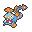
Gorebyss and Huntail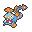| « Previous Article | Home | Next Article » |
Shell Smash is a setup move that boosts the user's Attack, Special Attack, and Speed by two stages while lowering its Defense and Special Defense by one stage. This incredibly strong support move grants multiple Pokémon the ability to obliterate teams or pave the way for a new sweeper through use of Baton Pass.
White Herb
White Herb is the go-to item for all Shell Smash users. It allows them to boost their Attack, Special Attack, and Speed without having their defenses drop. For some Pokémon, such as Cloyster and Crustle, this is a great way to hold onto a strong Defense stat to avoid being knocked out by a fast physical attacker.
Focus Sash
Focus Sash has the potential to be a great tool for Shell Smash users because it prevents the holder from being OHKOed, leaving it with 1 HP; however, Focus Sash comes with a few risks. First off, Focus Sash users are usually trumped by priority, as unlike White Herb, it does not remedy Shell Smash's downside: lowering the user's defenses. Focus Sash users also are done in by entry hazards. This, however, can be prevented with Rapid Spin and Defog users or by leading with your Shell Smash user.
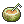Berry Juice (Little Cup only)
Berry Juice heals the user by 20 HP when it is at or below 50% of its HP, which is enough to bring most Little Cup Pokémon back to full HP. This allows Tirtouga and Dwebble, which have access to the combination of Shell Smash and Sturdy, to set up a Shell Smash, survive any hit thanks to Sturdy, and recover back to full health thanks to Berry Juice.
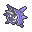Cloyster
Meet Cloyster, probably the most famous Shell Smash user in Pokémon history. Before Shell Smash was introduced, Cloyster was just kind of there, being useful at some points and death fodder at others. However, in Generation V, this clam received a gift from our Lord, Game Freak. With Skill Link, Cloyster carries 125 Base Power moves in Icicle Spear and Rock Blast, along with Razor Shell or Hydro Pump for extra coverage; at +2 Attack and Special Attack, Cloyster can just cut through teams.
Cloyster has numerous options when picking an item to use. A standard set, one you will see in almost every battle you face against Cloyster, includes either White Herb or Focus Sash. Both are pretty situational, as White Herb still leaves Cloyster open to strong priority, and Focus Sash is ruined by priority and entry hazards. If you want to be extra gimmicky, slapping a King's Rock on Cloyster will grant Rock Blast and Icicle Spear with a 50% chance to flinch.
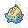Omastar
Unlike Cloyster, Omastar uses the Special Attack boost from Shell Smash, and to a great extent as well. With access to Earth Power, Hydro Pump, and Ice Beam, along with, of course, the assortment of Hidden Powers, the praised Helix is a force to be reckoned with. Before receiving Shell Smash in Generation IV, Omastar served the same purpose as Cloyster: a Spiker; however, it lacked (and still lacks) access to Rapid Spin, which the clam had. Shell Smash allowed the Helix to rise out of its shell (quite literally) and take on a whole slew of Pokémon.
Generally, you will see Earth Power, Ice Beam, Surf / Hydro Pump, and Hidden Power Grass on Omastar. Of course, there must be room for Shell Smash, so depending on the needs of your team, you must choose between Ice Beam and Hidden Power Grass, as the other two moves are more necessary. It is also recommended to use a Focus Sash with Omastar, as opposed to a White Herb. As Omastar has weaknesses to a variety of types, including a 4x weakness to Grass-type attacks, having its dropped defenses restored by White Herb is no saving grace.
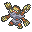Barbaracle
Barbaracle (and its pre-evolution Binacle) were the only Shell Smash-ing newcomers in XY. Now, Barbaracle seems like a niche Shell Smash user, having below average Speed, above average Attack, and high Defense. However, it has a certain new, somewhat diverse, flavor to him. No other Shell Smash users can viably come packing roundhouse moves such as Earthquake, Cross Chop, and Stone Edge. To give an estimate of Barbaracle's power, +2 Barbaracle has a decent chance to OHKO Aegislash-Shield with Earthquake, and an almost certain chance after Stealth Rock damage. It also OHKOes 252 / 252 Impish Chansey, a feat to be praised. Blessed with Tough Claws, the "cherry on top," Barbaracle is a prime contender for a spot on your team.
But if Barbaracle is so good, then why is it only NU? Well, Pokémon with this type of power do not come free of charge; look at Slaking, for example. Despite its nice STAB moves, Barbaracle is stuck with some common weaknesses. It is hard-pressed to choose an item, as Focus Sash enables it to get a guaranteed Shell Smash, but White Herb prevents the 2HKOs that become OHKOs after Barbaracle is at -1 Defense and Special Defense. Also, simply having Shell Smash by no means guarantees Barbaracle a place on a team. Feraligatr, which has access to Earthquake, Waterfall, and Dragon Dance / Swords Dance, is just as good a choice for your physical Water-type as Barbaracle is.
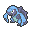Carracosta
Carracosta has never really seen the light in any tier. After using Shell Smash, Carracosta has incredible strength and has access to Aqua Jet to top it off. However, it is usually more trouble than it's worth. Not only this, but how many Shell Smash users are Water- or Rock-type again? Oh yeah, all of them. Despite hitting a tiny bit harder and having a much higher Defense stat than Barbaracle, this turtle's Speed is also less than half of the coral barbarian's. It is safe to say that Carracosta is a niche Shell Smash user and will never be as popular in a tier as its pre-evolution, Tirtouga.
Gorebyss and Huntail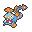
Here, we have the reason why Shell Smash + Baton Pass was banned in BW NU. To allow one Pokémon to pass such incredible boosts to another that has the diverse qualities needed to sweep is a death sentence to the opponent. It was too overwhelming to handle. However, these two Pokémon still have capable stats that can bring down opposing Pokémon themselves.
Both having respectable defense stats, White Herb is the item to use. The pair also has respectable movepools that allow them to get the dirty work done. Gorebyss, in addition to Shell Smash, can run Hydro Pump, Surf, Ice Beam, and the preferred Hidden Power Grass. Huntail has access to Sucker Punch, Return, Waterfall, Ice Beam, and Hydro Pump. However, in Huntail's case, bulky Water-types, such as Lanturn and Lapras, and those immune to Water, such as Cradily, can take a hit easily and OHKO back. The only real things holding these two back are Pokémon that resist all of their attacks or can OHKO them before Shell Smash is used. Therefore, if these two are to be used, some support might be necessary to take out threats before picking off the opponent's team.
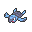Tirtouga
With a decent base 78 Attack stat and SturdyJuice, the combination of Sturdy and Berry Juice, which allows it to survive at least three hits before it gets knocked out, Tirtouga can easily sweep weakened teams late-game. Tirtouga has access to a cool typing that lets it set up on a bunch of common Pokémon safely, and its wide movepool consists of moves such as STAB Waterfall, Stone Edge (or Rock Slide if you prefer accuracy and its chance to flinch the target), priority Aqua Jet to outprioritize opposing revenge killers and Earthquake, which lets Tirtouga beat Croagunk and Chinchou, Pokémon that would otherwise wall Tirtouga. It can also run Solid Rock instead of Sturdy to be able to live some super effective hits, such Drilbur's Earthquake, which ignores Sturdy thanks to Mold Breaker; however, Sturdy usually outclasses Solid Rock.
Even though Tirtouga might at first seem like a really dangerous threat, it is easily stopped if it sets up while its counters and revenge killers are still loose, and Tirtouga's Speed is actually really mediocre; even after Tirtouga uses Shell Smash, most Choice Scarf users can outspeed it. Tirtouga also can't usually break through bulky Pokémon such as Foongus and Pumpkaboo, which can both cripple it with Spore and Will-O-Wisp and damage it with Giga Drain and Bullet Seed respectively.
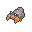Dwebble
Dwebble is another Pokémon in Little Cup with access to both Shell Smash and Sturdy, and it has the same role as Tirtouga: a late-game sweeper. Dwebble has a really decent base 55 Speed stat, which allows it to outspeed every Choice Scarf user in the metagame after using Shell Smash, making it harder to revenge kill compared to Tirtouga. It also has a respectable base 65 Attack stat, which may seem mediocre at first, but after a Shell Smash, Dwebble becomes a deadly sweeper thanks to Sturdy. Tirtouga also has a wide offensive movepool, which consists of plenty of useful moves such as Rock Blast, which allows it to beat Focus Sash Abra, a problem otherwise, Stone Edge, X-Scissor, a worthwhile STAB attack even though it doesn't hit much in the Little Cup metagame, Knock Off for Ghost-types, and Earthquake to deal with Steel-types and Croagunk.
However, Dwebble can be considered outclassed by Tirtouga as a physical Shell Smash sweeper for many reasons: the first one is that it has a lower Attack stat, which causes it to be easily walled and therefore fail as a sweeper, its defenses are lower than Tirtouga's, its Bug typing is one of the worst offensively, as it doesn't hit much. Dwebble is also lacking defensively because loses 25% of its HP if it switches into Stealth Rock, and it's also weak tocommon types such as Water and Steel.
 Omanyte
Omanyte
Omanyte is considered the best special Shell Smash user in the Little Cup metagame. Its massive base 90 Special Attack stat allows it to become a deadly late-game sweeper after a Shell Smash. What differentiates it from Clamperl is its Rock typing, which gives it more setup opportunities, its high Defense, which lets it step on plenty of physical attackers such as Fletchling, and lack of item-reliance, which lets it hold useful items such as Eviolite, which gives it the bulk to set up reliably. Omanyte also has access to Earth Power, a really solid coverage move that allows it to get past Chinchou, Croagunk, and Skrelp, which would otherwise wall it. Ice Beam is another coverage move that deals with Grass-types, which can be really problematic.
However, Omanyte's Rock typing makes it weak to common priority attacks such as Vacuum Wave from Croagunk and, to a lesser extent, Timburr's Mach Punch. Omanyte's low Special Defense often forces it to hold back from setting up on special attackers. Omanyte also has mediocre Speed, so plenty of Choice Scarf users, such as Chinchou and Mienfoo, can outspeed it; those two Pokémon in particular can KO Omanyte with Thunderbolt and High Jump Kick, respectively.
Clamperl
Clamperl's niche over other Shell Smash users is its signature item, Deep Sea Tooth, which doubles its Special Attack, allowing it to hit a staggering 72 Special Attack after a Shell Smash boost. With this, Clamperl can OHKO most of the metagame, which allows it to easily sweep through unprepared teams, making it a threat in even PU.
However, unlike other Shell Smash users in Little Cup, Clamperl is very reliant on Deep Sea Tooth, so it can't heal back with Berry Juice like Dwebble and Tirtouga or use Eviolite to boost its defenses. Clamperl's pure Water typing leaves it with less resistances than other Shell Smash users, thus granting it less setup opportunities. Another drawback to Clamperl is its shallow special movepool, which causes it to be walled by Water-types such as Chinchou and forces it to use Hidden Power Grass. All this leaves Clamperl kind of outclassed by Omanyte as a special Shell Smash user; however, Clamperl hits harder and has fewer weaknesses.
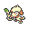Smeargle
What can't Smeargle do? Smeargle can use any move it wants and Shell Smash is awesome in conjunction with Baton Pass. Directions: Spore, Smash, Pass. Smeargle already has paper thin defenses, so it's not as though the defense drops will have much of an effect on it. The Pokémon Picasso has quite a stabler mood in OU, where it resides sans-Moody and is a force that makes opponents cringe when they realize their team's lack of a Grass-type or Mandibuzz to switch into Spore.
Shuckle
It's common knowledge that Shell Smash boosts the user's Attack, Special Attack, and Speed at the cost of lowering its Defense and Special Defense. However, Shuckle is a special case, as it's ability Contrary makes Shell Smash boost its already sky-high defenses, letting it tank hits more reliably.
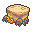Crustle
Crustle is another niche Shell Smash user, perhaps even one that is somewhat forgotten, as it can fulfill other wanted positions. Crustle is akin to a bulkier Armaldo with a lower Attack stat and access to Shell Smash. However, Crustle is still incredibly slow after a boost and has access no priority moves. So, chances are you get outsped the turn setting up, then outsped again the next turn and KOed because Sturdy is broken. Crustle should stick with what it does best: being a Spikes and Stealth Rock suicide lead; in fact, it is good in this role.
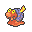Magcargo
Magcargo might at first seem like a usable special Shell Smash sweeper in PU or even NU given its relatively high base 120 Defense stat, which can give it a few setup opportunities; however, Magcargo has 4x weaknesses to Ground- and Water, common attackng types, so in practice, its opportunities to set up are limited. Also, Magcargo's Speed stat is really bad and leaves it easily outsped by even some Choice Scarf-lacking Pokémon, and its Special Attack stat is kind of low, too. All this makes Magcargo a useless Pokémon, but hey, it's a Fire-type snail that is hotter than the sun!
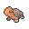Torkoal
Torkoal is another forgotten Pokémon that has access to Shell Smash, and with its pure Fire typing and higher stats than Magcargo, it seems like a better option. While Torkoal is actually usable, unlike Magcargo its Speed stat is as low as the fiery snail's, so it can be revenge killed quickly and easily.
| « Previous Article | Home | Next Article » |